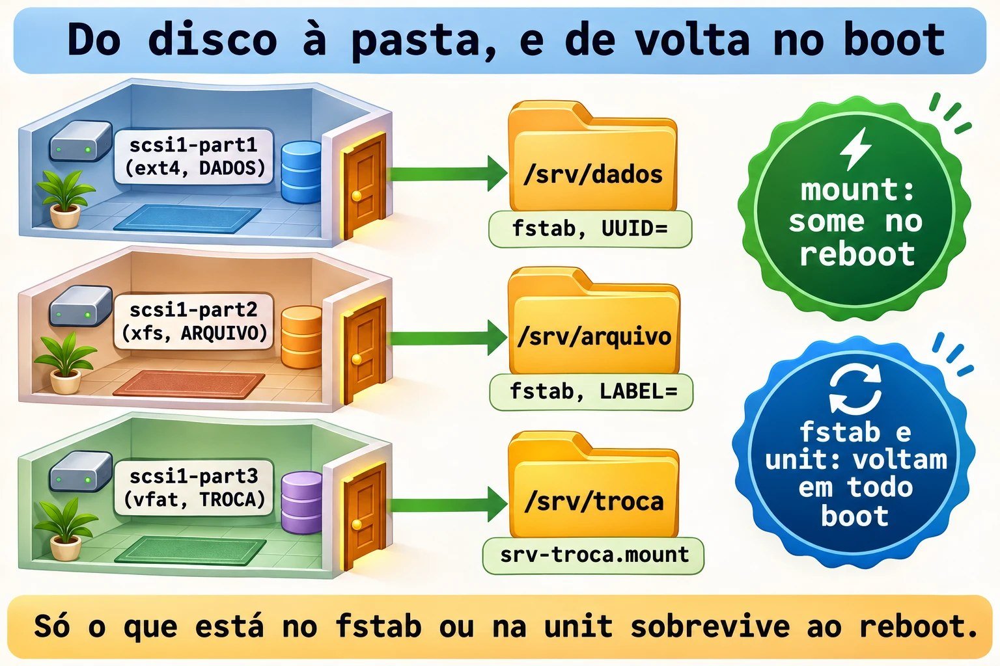
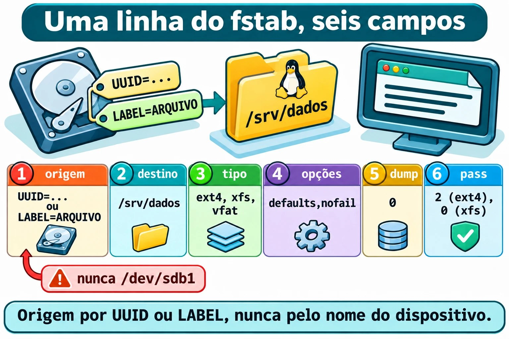
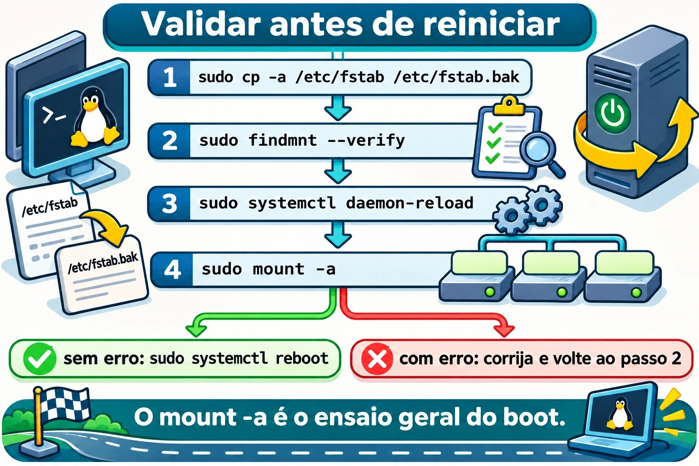

Aula 9.4 · Montar e persistir
No Windows, o disco novo ganha uma letra e continua lá depois do reinício. No Linux, um sistema de arquivos só aparece quando alguém o monta em uma pasta, e, sem registro, a montagem some no reboot. Nesta aula você monta as três partições da 9.3 em /srv/dados, /srv/arquivo e /srv/troca, deixa tudo registrado de forma segura e prova com um reboot.
Núcleo desta aula: montar e desmontar com
mounteumount; ler o estado comfindmnt; escrever uma linha de/etc/fstabcom os seis campos; escolherUUID=ouLABEL=em vez de/dev/sdb1; usarnofail; validar comfindmnt --verifyemount -aantes de reiniciar; e montar um VFAT por unit do systemd. O resto é aprofundamento.
| Ficha | |
|---|---|
| Módulo | M9 · Armazenamento, aula 4 de 7 |
| Quando | Semana 14 |
| Ao final | Três montagens que sobrevivem ao reboot, e um fstab que você valida antes de confiar nele |
| Pré-requisitos | Aulas 9.1, 9.2 e 9.3 (as três partições do scsi1 com sistema de arquivos e rótulos) |
| Tempo | cerca de 2h30 |
| Snapshots | m9a4-inicio e m9a4-fim na rocky-lab e na debian-lab |
1 · Aquecimento
Responda antes de ler.
- Um sistema de arquivos existe no disco, mas
lsna pasta mostra vazio. O que pode ter acontecido? - Por que o nome
/dev/sdb1é uma má escolha para um registro permanente? - O servidor tem um disco de dados que às vezes não está presente. O que acontece no boot se o fstab exige esse disco?
2 · Por que importa
| O chamado | A resposta errada | O que ela causa |
|---|---|---|
| "Reiniciamos e os dados sumiram" | Copiar tudo de novo | A montagem não estava no fstab, e os dados novos foram para o disco da raiz |
| "O servidor não sobe depois do reboot" | Reinstalar | Uma linha errada no fstab, sem nofail, derruba o boot em modo de emergência |
"O disco virou /dev/sdc e o backup falhou" | Trocar o nome no script | O registro usava o nome do dispositivo, e a ordem não é garantida |
| "Gravei na pasta e o disco continua vazio" | Procurar o erro no programa | Você gravou na raiz, por baixo de uma montagem que caiu |
3 · Modelo mental
Um disco formatado é um cômodo sem porta. Montar é instalar a porta numa parede: a pasta vazia é o vão, e o que abre atrás dela é o sistema de arquivos. O
/etc/fstabé a lista de portas que a casa recoloca toda vez que liga a energia. Escreva o endereço do cômodo pelo que ele é (UUID ou rótulo), e não pela ordem em que os cômodos foram construídos (sdb1). E, se uma porta empena, a casa liga mesmo assim, desde que a lista diganofail.
/ (raiz, no disco do sistema)
└── srv
├── dados ← scsi1-part1 ext4 DADOS fstab, UUID=
├── arquivo ← scsi1-part2 xfs ARQUIVO fstab, LABEL=
└── troca ← scsi1-part3 vfat TROCA unit srv-troca.mount
mount : liga agora (some no reboot)
fstab : liga em todo boot (lido pelo systemd na partida)
unit : liga em todo boot (mesma ideia, escrita como serviço)

Ponte Windows
| No Windows | No Linux | Onde a comparação engana |
|---|---|---|
Letra de unidade (D:) | Ponto de montagem (/srv/dados) | Não há letras: tudo vive em uma só árvore |
Atribuir letra (Gerenciamento de Disco, diskpart) | mount | O mount simples não persiste |
Letra guardada no registro (MountedDevices) | /etc/fstab | É um arquivo de texto, que você edita e valida |
Caminho de volume \\?\Volume{GUID}\ | UUID= | Mesma ideia: identificar pelo que o volume é |
chkdsk na inicialização | Campo 6 do fstab (pass) | Só o ext4 usa; o XFS não precisa |
4 · O essencial
Montar e desmontar à mão
sudo mount /dev/disk/by-label/DADOS /srv/dados
findmnt /srv/dados
sudo umount /srv/dadosmount ORIGEM DESTINO: liga o sistema de arquivos da origem à pasta de destino. O tipo (ext4,xfs,vfat) é detectado sozinho.findmnt CAMINHO: mostra como aquele caminho está montado. Sem argumento, lista a árvore inteira. O-o TARGET,SOURCE,FSTYPE,OPTIONSescolhe as colunas.umount DESTINO: desliga. Dátarget is busyse algum processo usa a pasta (saia dela comcd ~).
O fstab, campo a campo
Uma linha, seis campos separados por espaço:
UUID=3f0c... /srv/dados ext4 defaults,nofail,x-systemd.device-timeout=10s 0 2| Campo | Exemplo | Significa |
|---|---|---|
| 1 · Origem | UUID=..., LABEL=ARQUIVO | Quem é o sistema de arquivos |
| 2 · Destino | /srv/dados | A pasta (precisa existir) |
| 3 · Tipo | ext4, xfs, vfat | O sistema de arquivos |
| 4 · Opções | defaults,nofail | Como montar |
5 · dump | 0 | Resquício de um programa de backup antigo. Use 0 |
6 · pass | 0, 1 ou 2 | Ordem do fsck no boot: 1 só para a raiz, 2 para os outros ext4, 0 para não checar (XFS e VFAT) |
Para origem, prefira UUID= (identificador gravado no mkfs, único) ou LABEL= (rótulo que você escolheu, legível). Evite /dev/sdb1: a ordem dos nomes muda.


Opções que importam
| Opção | Efeito |
|---|---|
defaults | rw,suid,dev,exec,auto,nouser,async: o comum, para uso normal |
nofail | Se o dispositivo não existir ou não montar, o boot continua |
x-systemd.device-timeout=10s | Espera 10 s pelo dispositivo, e não 90 s |
noexec, nosuid, nodev | Endurecimento (não roda binários, ignora SUID e dispositivos) |
nofail com x-systemd.device-timeout é a dupla de todo disco de dados. A raiz e o /boot ficam sem nofail, porque o sistema depende deles.
Unit de montagem, para o VFAT
O systemd transforma cada linha do fstab em uma unit de montagem. Você também pode escrever a unit à mão. O nome é o caminho, com / virando -, e o systemd-escape calcula:
systemd-escape -p --suffix=mount /srv/troca-ptrata o argumento como caminho;--suffix=mountacrescenta o tipo. A saída ésrv-troca.mount.
O arquivo /etc/systemd/system/srv-troca.mount tem três blocos: [Unit], [Mount] (What=, Where=, Type=, Options=) e [Install]. O Where= precisa coincidir com o nome do arquivo, senão o systemd recusa.
Num fstab, o nofail faz o systemd criar uma dependência fraca (Wants=), e não uma obrigatória (Requires=). Na unit escrita à mão, quem faz isso é o [Install] com WantedBy=local-fs.target: se a montagem falhar, o boot continua.
O VFAT não guarda dono nem modo. As opções uid=, gid= e umask= dizem quem parece ser o dono e o que ele pode fazer: com umask=022, tudo aparece como rwxr-xr-x.
Verificar antes de reiniciar
| Quero... | Comando |
|---|---|
| Checar a sintaxe e as origens do fstab | sudo findmnt --verify |
| Mostrar cada teste | sudo findmnt --verify --verbose |
| Montar tudo o que falta no fstab | sudo mount -a |
| Avisar o systemd de que o fstab mudou | sudo systemctl daemon-reload |
Ver tudo o que está montado em /srv | findmnt -o TARGET,SOURCE,FSTYPE,OPTIONS | grep srv |
Antes de editar: sudo cp -a /etc/fstab /etc/fstab.bak (o -a preserva dono, modo e data).


Rocky × Debian
| Rocky | Debian | |
|---|---|---|
| Raiz no fstab | /dev/mapper/rl-root | /dev/mapper/debian--lab--vg-root ou UUID= |
| Aparência do arquivo | Poucas linhas, com cabeçalho do instalador | Comentários explicando cada linha |
| XFS | Nativo | Instale xfsprogs para as ferramentas (xfs_info, xfs_repair) |
| Ao editar o fstab | systemctl daemon-reload (o mount dá um (hint) se você esquecer) | O mesmo |
| Pacotes | rpm -q xfsprogs dosfstools | dpkg -s xfsprogs dosfstools |
5 · Lab guiado
Passo 0 · Snapshot, backup e conferência. O backup do PBS que você fez na 9.1 continua valendo. Lembre: snapshot não é backup. No Proxmox:
qm snapshot 201 m9a4-inicio
qm snapshot 202 m9a4-inicio
pvesm list PBS-LAB --vmid 201O último comando precisa listar o backup da 9.1. Na rocky-lab, confira o disco (o scsi1 da 2.2, ampliado na 9.1) pelo nome estável, e só depois olhe as partições:
ls -l /dev/disk/by-id/ | grep scsi1
lsblk -f
ls -l /dev/disk/by-label/Saída esperada (a letra pode não ser sdb):
NAME FSTYPE FSVER LABEL UUID MOUNTPOINTS
sdb
├─sdb1 ext4 1.0 DADOS 3f0c1c1e-5a47-4d0e-9b53-0d6a1c2f7e11
├─sdb2 xfs ARQUIVO 8b7a52f4-12c9-4c7e-a1d0-6e7f3b9c0a42
└─sdb3 vfat FAT32 TROCA 4A21-9C3ESe faltar algum rótulo, volte à 9.3. Confira os pacotes com rpm -q xfsprogs dosfstools e instale o que faltar com sudo dnf install -y xfsprogs dosfstools. Crie as pastas:
sudo mkdir -p /srv/dados /srv/arquivo /srv/trocaPasso 1 · Montar à mão, um de cada vez.
sudo mount /dev/disk/by-label/DADOS /srv/dados
findmnt -o TARGET,SOURCE,FSTYPE,OPTIONS /srv/dados
sudo umount /srv/dados
findmnt /srv/dadosA primeira consulta mostra /srv/dados /dev/sdb1 ext4 rw,relatime. Depois do umount, o segundo findmnt não imprime nada: não é mais ponto de montagem. Repita com ARQUIVO em /srv/arquivo (aparece xfs) e TROCA em /srv/troca (aparece vfat). Desmonte os três.
Passo 2 · /srv/dados no fstab, por UUID.
sudo cp -a /etc/fstab /etc/fstab.bak
DADOS_UUID=$(sudo blkid -s UUID -o value /dev/disk/by-label/DADOS)
echo "$DADOS_UUID"
echo "UUID=$DADOS_UUID /srv/dados ext4 defaults,nofail,x-systemd.device-timeout=10s 0 2" | sudo tee -a /etc/fstab
tail -n 3 /etc/fstabblkid -s UUID -o value DISPOSITIVOimprime só o UUID, sem o resto da linha.tee -aacrescenta ao fim do arquivo comsudo. Um>>comum falharia, porque o redirecionamento roda como você, e não como root.
Passo 3 · /srv/arquivo no fstab, por LABEL.
echo "LABEL=ARQUIVO /srv/arquivo xfs defaults,nofail,x-systemd.device-timeout=10s 0 0" | sudo tee -a /etc/fstabO campo 6 é 0: o XFS não usa o fsck do boot (o fsck.xfs não faz nada, e o reparo é manual, assunto da 9.5).
Passo 4 · /srv/troca por unit do systemd. Descubra o seu UID e GID, e o nome da unit:
id -u; id -g
systemd-escape -p --suffix=mount /srv/trocaCrie o arquivo (troque 1000 pelo que o id mostrou):
sudo tee /etc/systemd/system/srv-troca.mount > /dev/null <<'EOF'
[Unit]
Description=Troca (VFAT, rotulo TROCA)
[Mount]
What=/dev/disk/by-label/TROCA
Where=/srv/troca
Type=vfat
Options=uid=1000,gid=1000,umask=022,nofail
[Install]
WantedBy=local-fs.target
EOFWhat=aponta para o rótulo, e não parasdb3.Options=é a lista do campo 4.nofailaqui é o mesmo texto do fstab, e a proteção de verdade vem doWantedBy=do[Install], como a aula explicou.
Passo 5 · Validar antes de reiniciar.
sudo findmnt --verify
sudo systemctl daemon-reload
sudo mount -a
sudo systemctl enable --now srv-troca.mount
findmnt -o TARGET,SOURCE,FSTYPE,OPTIONS | grep srv- No
findmnt --verify, as linhas de/srvnão podem ter aviso. Na Rocky, ele costuma avisarrecommended root FS passno is 1 (current is 0)na raiz: a linha é do instalador, e o XFS não usafsckno boot. Deixe como está. Sem nenhum aviso, o resumo éSuccess, no errors or warnings detected. - O
daemon-reloadfaz o systemd reler o fstab e a unit nova. - O
mount -amonta/srv/dadose/srv/arquivo.enable --nowliga a unit agora e nos próximos boots.
Saída esperada do último comando: as três linhas, com ext4, xfs e vfat (este com uid=1000,gid=1000 e fmask=0022).
Agora dê a você o uso das duas primeiras e teste a terceira:
sudo chown "$USER": /srv/dados /srv/arquivo
echo ola > /srv/dados/ola.txt
echo ola > /srv/arquivo/ola.txt
touch /srv/troca/ola.txt
chmod 600 /srv/troca/ola.txt
ls -ld /srv/trocaO chmod no VFAT falha com Operation not permitted. O ls -ld /srv/troca mostra você como dono, pelo uid=.
Passo 6 · Reiniciar e provar.
sudo systemctl rebootEntre de novo e rode:
findmnt -o TARGET,SOURCE,FSTYPE | grep srv
cat /srv/dados/ola.txt /srv/arquivo/ola.txt
systemctl --failedAs três montagens voltam, com os arquivos, e nenhuma srv-*.mount aparece em --failed.
Passo 7 · debian-lab. Repita os passos 0 a 6 na debian-lab (xfsprogs com sudo apt install -y xfsprogs). Só acrescente as suas linhas ao fim do /etc/fstab dela, que já tem comentários e UUID=.
Decida 1
O servidor tem um disco de dados que, às vezes, é desligado para manutenção. Mesmo assim, ele precisa subir sozinho. Qual a linha certa?
A) /dev/sdb1 /srv/dados ext4 defaults 0 2. B) UUID=... /srv/dados ext4 defaults,nofail,x-systemd.device-timeout=10s 0 2. C) Tirar a linha do fstab e montar à mão depois de cada boot.
Marque uma opção antes.
| Se você marcou | Resultado | Por quê |
|---|---|---|
| A | Errado | Nome do dispositivo muda, e sem nofail a falta do disco derruba o boot |
| B | Certo | Identifica pelo UUID, não trava o boot e espera pouco |
| C | Não escala | Alguém esquece, e o serviço grava na raiz |
Para fixar: disco de dados leva UUID= ou LABEL= e nofail.
Decida 2
Você editou o fstab. Antes de reiniciar, o que faz?
A) Reinicia e vê. B) sudo findmnt --verify, sudo systemctl daemon-reload e sudo mount -a. C) Confia, porque copiou a linha de outro servidor.
Marque uma opção antes.
| Se você marcou | Resultado | Por quê |
|---|---|---|
| A | Arriscado | Um erro vira ida ao console |
| B | Certo | Acha o erro com o sistema de pé, onde conserto é um cp |
| C | Arriscado | O UUID do outro servidor não existe neste |
Para fixar: o mount -a é o ensaio geral do boot.
6 · Quebre e conserte
Quebra 1 · A gravação que fica escondida
Na rocky-lab, simule uma montagem que caiu:
sudo umount /srv/arquivo
echo oi | sudo tee /srv/arquivo/escondido.txt
sudo mount /srv/arquivo
ls /srv/arquivoSintoma: o escondido.txt sumiu, e o disco do XFS nunca o recebeu.
Diagnóstico: mountpoint /srv/arquivo diz que é um ponto de montagem, agora. O arquivo foi gravado na raiz, na pasta vazia, e a montagem o cobriu. Para ver por baixo, monte a raiz em outro lugar:
sudo mkdir -p /mnt/raiz
sudo mount --bind / /mnt/raiz
ls /mnt/raiz/srv/arquivoConserto: apague pelo caminho de baixo: sudo rm /mnt/raiz/srv/arquivo/escondido.txt. Depois sudo umount /mnt/raiz.
Quebra 2 · UUID digitado errado
sudo cp -a /etc/fstab /etc/fstab.ok
echo "UUID=11111111-2222-3333-4444-555555555555 /srv/teste ext4 defaults,nofail 0 2" | sudo tee -a /etc/fstab
sudo mkdir -p /srv/teste
sudo mount -aSintoma: nenhum, e esse é o perigo. O mount -a termina calado, porque o nofail também manda o mount não reclamar de dispositivo que não existe. E findmnt /srv/teste não mostra nada.
Diagnóstico: sudo findmnt --verify aponta a linha /srv/teste com um aviso de origem não encontrada (o UUID=11111111-...), e o resumo no fim conta esse aviso. Compare com lsblk -f: esse UUID não existe.
Conserto: sudo cp -a /etc/fstab.ok /etc/fstab e sudo systemctl daemon-reload. Sem o nofail, essa linha seria um boot em modo de emergência. Com ele, é um disco que nunca monta e ninguém percebe. Por isso você valida com os dois: findmnt --verify e mount -a.
Quebra 3 · A unit que não bate com o nome
sudo systemctl stop srv-troca.mount
sudo sed -i 's|^Where=.*|Where=/srv/trocas|' /etc/systemd/system/srv-troca.mount
sudo systemctl daemon-reload
sudo systemctl start srv-troca.mountSintoma: Failed to start srv-troca.mount.
Diagnóstico: systemctl status srv-troca.mount mostra Where= setting doesn't match unit name. Refusing. O journalctl -u srv-troca.mount -b traz a mesma linha.
Conserto: sudo sed -i 's|^Where=.*|Where=/srv/troca|' /etc/systemd/system/srv-troca.mount, depois sudo systemctl daemon-reload e sudo systemctl start srv-troca.mount. O nome da unit é o caminho.
Limpeza
sudo rmdir /mnt/raiz /srv/teste
sudo rm -f /etc/fstab.ok /srv/dados/ola.txt /srv/arquivo/ola.txt /srv/troca/ola.txt
findmnt -o TARGET,SOURCE,FSTYPE | grep srvMantenha /etc/fstab.bak, as linhas do fstab e a unit: as três montagens ficam, como a 9.5 espera.
7 · Armadilhas
| Armadilha | O que acontece | Como evitar |
|---|---|---|
/dev/sdb1 no fstab | Muda de nome e monta o disco errado | UUID= ou LABEL= |
Disco de dados sem nofail | Boot em modo de emergência | nofail e x-systemd.device-timeout=10s |
Esquecer o daemon-reload | O systemd usa o fstab antigo | Rode depois de cada edição |
| Gravar com a montagem caída | Dados na raiz, por baixo | mountpoint -q /srv/dados nos scripts |
8 · Quiz
Responda sem olhar. O gabarito está no fim da aula.
- Quais são os seis campos de uma linha do fstab?
- Qual a diferença entre
UUID=eLABEL=? Qual deles muda se você refizer omkfs? - O que o
nofailfaz, e o que ele não faz? - Para que serve
findmnt --verify, e por quemount -acompleta o teste? - Qual o nome da unit que monta
/srv/troca? - Por que o
chmodfalha em um VFAT montado?
9 · Cola
Para saber de cor:
| Quero... | Comando |
|---|---|
| Montar | sudo mount ORIGEM PASTA |
| Ver uma montagem | findmnt PASTA |
| UUID de um dispositivo | sudo blkid -s UUID -o value DISP |
| Cópia do fstab | sudo cp -a /etc/fstab /etc/fstab.bak |
| Validar | sudo findmnt --verify, sudo mount -a |
| Reler o fstab | sudo systemctl daemon-reload |
Para consultar:
| Quero... | Comando |
|---|---|
| Nome da unit | systemd-escape -p --suffix=mount /srv/troca |
| Ligar a unit | sudo systemctl enable --now srv-troca.mount |
| Ver por baixo | sudo mount --bind / /mnt/raiz |
| Unit com falha | systemctl --failed, journalctl -u UNIT -b |
Flashcards:
mountsozinho → some no reboot.UUID=→ não muda com a ordem dos discos.nofail→ o boot continua.findmnt --verify→ ensaio da sintaxe.
10 · Checklist e fechamento
- [ ] Monto e desmonto à mão e leio com
findmnt - [ ] Escrevo uma linha de fstab dos seis campos, de cabeça
- [ ] Escolho
UUID=ouLABEL=, nunca/dev/sdb1 - [ ] Uso
nofailex-systemd.device-timeout=10sem disco de dados - [ ] Valido com
findmnt --verifyemount -aantes de reiniciar - [ ] Monto um VFAT por unit, com
uid=,gid=eumask= - [ ] Provo as montagens com um reboot
Último exercício, sem olhar a aula: na debian-lab, restaure /etc/fstab.bak, desmonte tudo e refaça as três montagens. Prove com um reboot.
Snapshot de fim (no Proxmox):
qm snapshot 201 m9a4-fim
qm snapshot 202 m9a4-fim11 · Na vida real
Missão, só leitura. Num servidor Linux que você administre (ou com autorização), rode apenas:
grep -vE '^\s*(#|$)' /etc/fstab
findmnt -o TARGET,SOURCE,FSTYPE,OPTIONS --real
sudo findmnt --verify
systemctl --failed --no-pager
systemctl list-units --type=mount --no-pagerPerguntas para responder:
- Alguma linha usa
/dev/sdXem vez deUUID=ouLABEL=? - Há disco de dados sem
nofail? - O
findmnt --verifytem avisos? Quais?
Diário: anote o que merece atenção. Não edite nem monte nada.
12 · Aprofundar quando quiser
man fstab,man mount,man findmnt: campos, opções e--verify.man systemd.mounteman systemd-fstab-generator: units de montagem e como o fstab vira unit.- Red Hat docs e Debian wiki (fstab): montagem persistente.
- kernel.org (VFAT) e util-linux:
uid,gid,umask;mount,findmnt,blkid.
DeepTutor (http://10.1.0.149:3782, KB "Curso Linux Sysadmin"):
!explica os seis campos do fstab!quiz Aula 9.4, 5 perguntas sobre fstab
Gabarito comentado
Aquecimento
- A montagem não está ativa: a pasta mostra o que existe na raiz, sem o disco. Confira com
findmntoumountpoint. - A ordem dos nomes
sdXnão é garantida e pode mudar de um boot para outro. - Sem
nofail, o boot espera pelo disco e cai em modo de emergência. Comnofail, o boot continua.
Quiz
- Origem, destino, tipo, opções,
dumpepass. UUID=é o identificador gravado pelomkfs, único.LABEL=é o nome que você escolhe. Um novomkfsgera novo UUID. O rótulo só muda se você mudar ou se esquecer de recolocá-lo.- Faz o boot continuar se o dispositivo faltar ou não montar (dependência fraca). Não monta o disco que falta nem avisa por si só.
- O
--verifycheca sintaxe, origens e destinos, sem montar, e acusa até uma origem que onofailesconderia. Omount -atenta de fato, achando erros que a leitura não pega (opção que o sistema de arquivos recusa, por exemplo). srv-troca.mount: sem a barra inicial,/vira-, mais.mount.- Porque o VFAT não guarda dono nem modo. Dono e permissão vêm de
uid=,gid=eumask=na montagem.